为Windows电脑重新安装或更换系统
先下载文件：https://cloud.189.cn/web/share?code=qaQz2u3ua67j（访问码：0hds）
请务必提前保存好您的电脑个人数据，安装新系统会直接清除所有的电脑软件和文件！如您操作有问题或其他原因导致您的电脑损坏等后果，请您自行承担一切后果！本文章只作引导使用。
准备：
- 电脑
- 大于 8G 以上的 U 盘
- 下载的文件
- 下载一个系统镜像文件（ 自行到https://www.xitongku.com/ ）先保存到桌面
简单介绍：
获取后，打开文件夹，会有以下内容
第一个文件夹是 PE 本体，
第二个文件夹就是扩展软件（需解压）
第三个是刻录工具
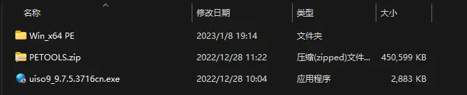
安装 PE：
我们右键点击【uiso9-9.7.5.3716cn.exe】这个工具，以管理员的身份运行
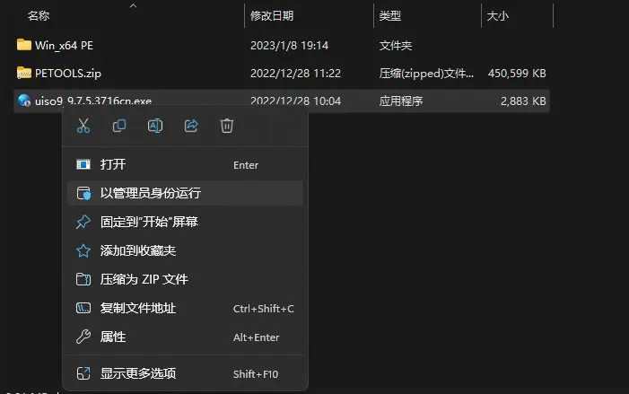
打开后，会提示安装，我们直接点击下一步，完成安装即可
刻录镜像：
点击【继续试用】
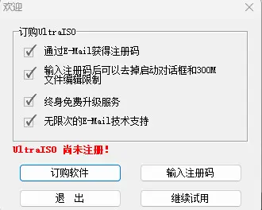
左下角找到所下载的文件夹中的【Win_x64 PE】
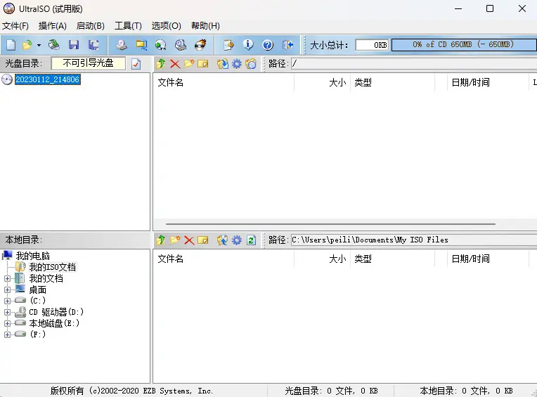
找到后双击打开
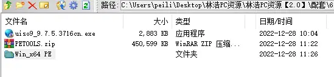
打开后会发现这 5 个压缩文件（不要解压），然后我们点击打开【11x64】（win11）或【10x64】（win10）
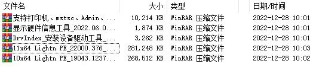
我们点击左边【11PEx64……】
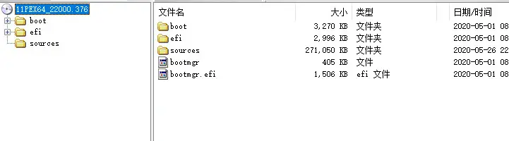
再点击上面的启动，单击【写入硬盘镜像】
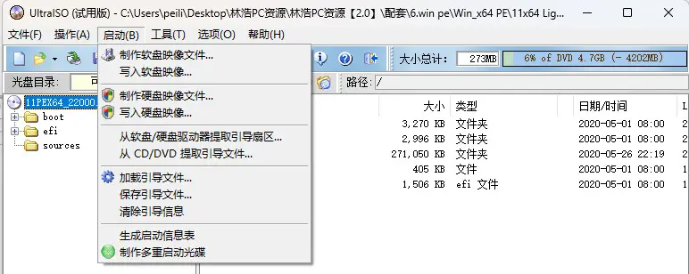
在弹出的页面中，点击写入即可
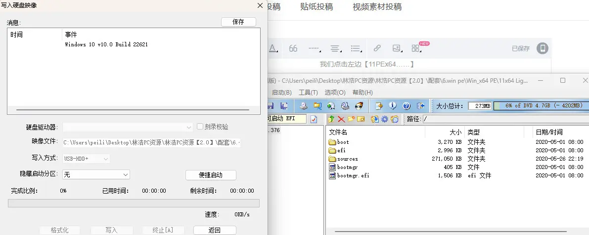
安装扩展软件：
首先，解压
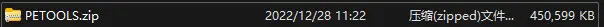
然后后将解压好的文件复制粘贴到已经写入好的 U 盘
转移系统文件：
把提前准备好的系统镜像文件，复制粘贴到 U 盘中即可！
进入 PE：
启动 PE 系统的关键操作顺序：
第一步：在开机时进入主板的启动项列表；
请将电脑关机，将微 PE 优盘插入到电脑后开机。然后在开机后的几秒内，当出现开机画面，按下快捷启动热键 F12（不同机型请查看下面快捷键列表）进入启动项列表，然后在列表中通过方向键选择 U 盘所在选项，一般会带 USB 字样或者是 U 盘的品牌名（Sandisk、Toshiba 之类），然后敲击回车可以进入 U 盘的 PE 菜单选择界面。
以下为各种品牌的主板和笔记本的快捷启动按键：
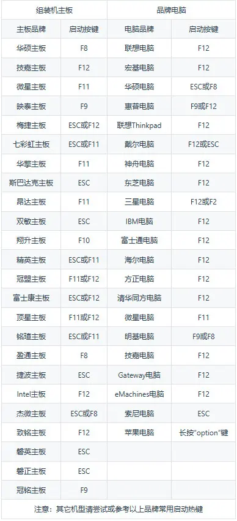
第二步：找到要启动的 U 盘；
通常，我们点击带 USB 字样的选项，即可
第三步：选择一个合适的 WinPE 系统版本进入。
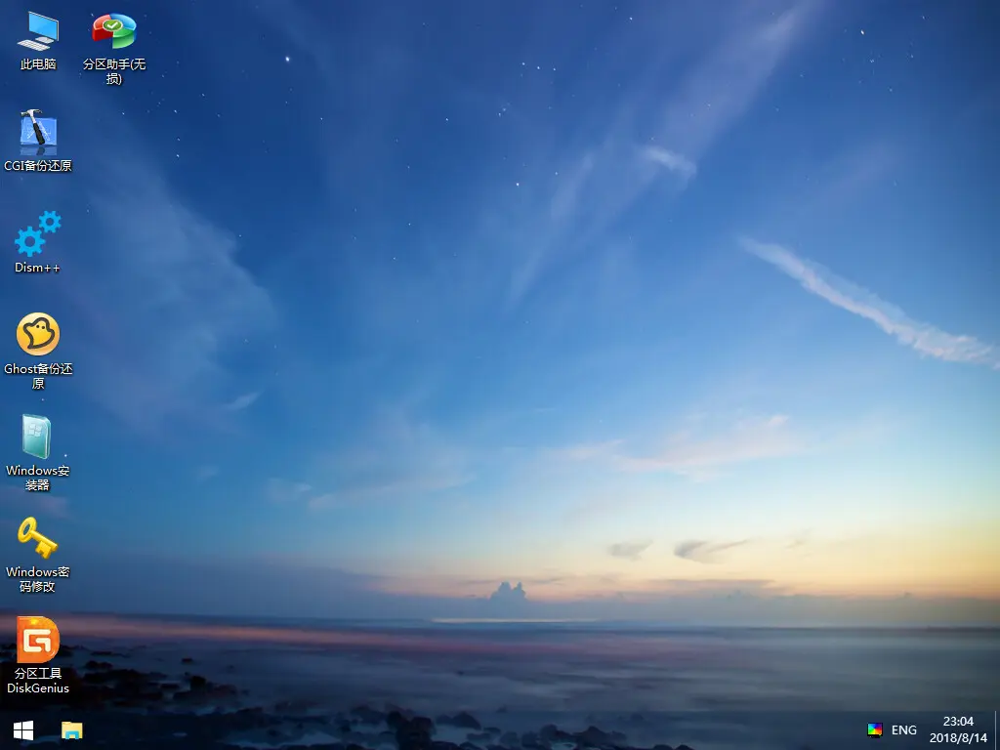
第四步：打开 Windows 安装器。
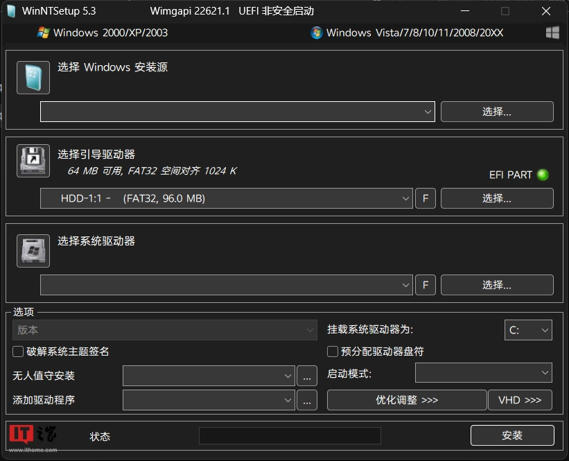
- 然后点击 “选择 Windows 安装源”，找到刚才的系统镜像文件
- 点击 “选择引导驱动器”，直接选择 C 盘即可
- 点击 “选择系统驱动器”，选择要安装新系统的盘符，如不知道要安装在哪里，直接点击 C 盘即可
- 接着点击下一步，然后点勾选 “安装成功自动重新启动计算机” 之后点击确定就直接等待，安装完之后会重新启动，重新启动后不要动电脑，更不要重启或关闭电脑
- 等电脑出现以下类似界面就证明您安装成功了，直接按照提示配置电脑就好
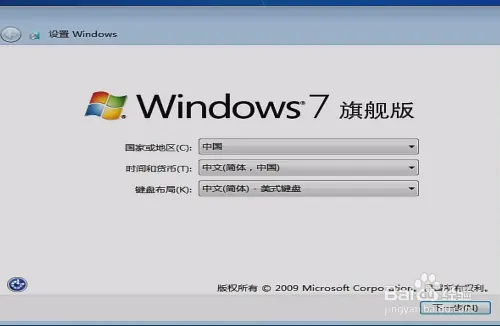